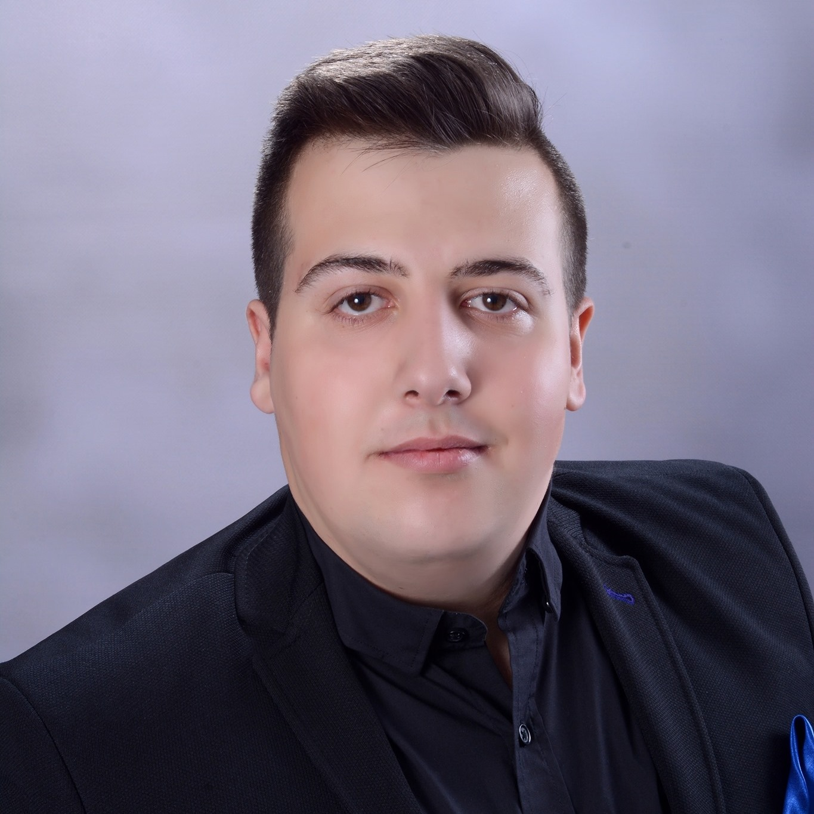
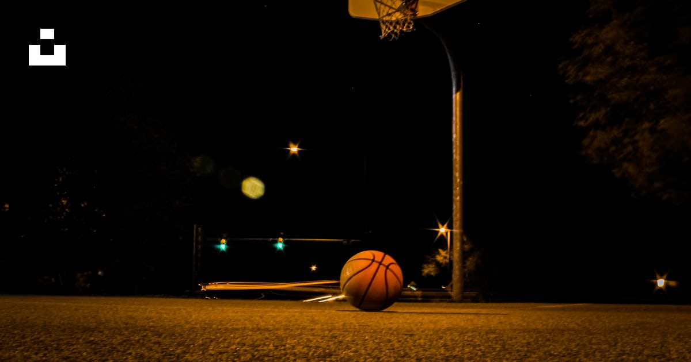

Hello, I am Jovan Atanasov, first year student in the Faculty of computer science and engineering at Ss. Cyril and Methodius University in Skopje, Republic of Macedonia. I finished my high school in Gymnasium Slavco Stojmenski in Stip. I am beginner with HTML and CSS, and I am making simple Web-pages.
I spend most of my free time out hanging with my friends, but I find few free hours per week to enjoy the Russian literature, from which I admire the most Fyodor Mikhailovich Dostoevsky. For the weekends while I'm at my home town I play basketball with my friends on the local playing field.
